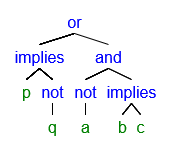
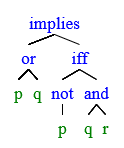
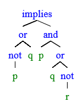
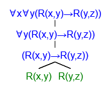
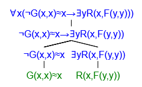

CS245 course notes: https://www.student.cs.uwaterloo.ca/~cs245/CS245-Lecture-Notes.pdf
Table of Contents
lec 1. 9.10
definition. a proposition is a statement that is either true or false.
definition. a compound proposition is formed by means of logical connectives.
definition.
unary connective
binary connectives
-
conjunction
| A |
B |
A and B |
B and A |
| 1 |
1 |
1 |
1 |
| 1 |
0 |
0 |
0 |
| 0 |
1 |
0 |
0 |
| 0 |
0 |
0 |
0 |
-
inclusive disjunction
| A |
B |
A or B |
B or A |
| 1 |
1 |
1 |
1 |
| 1 |
0 |
1 |
1 |
| 0 |
1 |
1 |
1 |
| 0 |
0 |
0 |
0 |
-
implication
| A |
B |
if A then B |
|
| 1 |
1 |
1 |
|
| 1 |
0 |
0 |
|
| 0 |
1 |
1 |
vacuously true when A=0; |
| 0 |
0 |
1 |
not symmetric |
-
equivalence
| A |
B |
A iff B |
B iff A |
| 1 |
1 |
1 |
1 |
| 1 |
0 |
0 |
0 |
| 0 |
1 |
0 |
0 |
| 0 |
0 |
1 |
1 |
definition. propositional language Lp
-
symbols
- propositional symbols: p,q,r,...
- connectives: ¬,∧,∨,→,⟺
- punctuation: (,)
-
expressions are finite strings of symbols.
two expressions are equal if symbols and lengths are same
-
empty expression λ: expression of length 0
-
uv denotes the result of concatenating two expressions u,v in this order.
- λu=uλ=u
-
v is a segment of v=w1vw2.
- v is a proper segment of u if v is non-empty and v=u.
-
if v=vw then v is initial segment(suffix) of u
definition. atom(Lp) is the set of expressions of Lp consisting of a proposition symbol only.
definition.(well-formed propositional formula) an expression of Lp is a member of form(Lp) iff:
- atom(Lp)⊆form(Lp)
- A∈form(Lp)⟶(¬A)∈form(Lp)
- A,B∈form(Lp)⟶(A∗B)∈form(Lp) where ∗ is one of the four connectives.
eg. p is a prop. variable, then which of p,(,¬ can appear in a well-formed formula?
lec 3.
definition. given a set Y⊆X and set P of operations (functions from Xn≥1→X), Y is closed under P if for every f∈P, say f is an n-ary function and every y1,...,yn∈Y we have f(y1,...,yn)∈Y.
definition. Y is a minimal set with respect to a property R if Y satisfies R, and for every set Y0 that satisfies R,Y⊆Y0.
definition. I(X,A,P) is the minimal subset of X that contains A and is closed under the operations in P.
- universe of all elements denote to be X
- core set denote to be A
- a set of operations B
eg. the natural numbers.
X={R}∗,A={0}P={f(x)=x+1}N={X,A,P}
definition. Given X,A,P and an element x∈X, a generation sequence from x is α1,α2,...αm from X such that αn=x and for every i≤m αi is either in A or is the result of applying some f∈P to some αj,αj′ such that j,j′<i.
eg. let X={a,b}∗,A={aa,aba},P={xxx,xyx,y}.
we have α1=aa,α2=aba and then α3=aaaba (applied from α1,α2), ...
technique. to show a property R holds for every element of a set inductively defined:
- show R holds for minimal subset of X (which is A)
- show for every n-ary f∈P,R(f(y1,...,yn)) holds whenever f(y1),...,f(yn) hold.
|
natural induction |
structural induction |
| domain |
N |
I(X,A,P) |
| basis |
n=0 |
every member of A |
| step |
assume holds for n, show n+1 |
for every f∈P, assume all inputs for f hold, show outputs hold |
| conclusion |
property holds for all n |
property holds for all members in I(X,A,P) |
propositions
X={finite sequences of symbols}∗A={English letters}P={¬,∧,∨⟹}
claim.(1) pp is not a legal proposition.
interpret. we have property R and propositions are I=(X,A,P).
proof. base: show the property holds for for all members of A. This is clear since every member of A is a single letter.
inductive step: for every operation f∈P and every x,y∈X, if R holds for X and y then R holds for f(x,y). Here P={(¬x)x,(x∧y)x,y,x∨yx,y,(x→y)x,y} we have no repeating two letters. □
property.(2) every proposition is either an atomic proposition or it starts with "(" or ends with ")".
proof. trivial structural induction □
property.(3) the number of left brackets in a proposition is always equal to the number of right brackets in the proposition.
proof. base: if x∈A, then op(x)=0,cl(x)=0 hence equal.
inductive: Assume x,y satisfy this property. Want to show so do they for four operations.
Then op((¬x))=op(x)+1,cl((¬x))=cl(x)+1, given that op(x)=cl(x) by inductive hypothesis we have equality.
For op((x→y))=op(x)+op(y)+1 and cl((x→y))=cl(x)+cl(y)+1. Invoke inductive hypothesis for op(x)=cl(x),op(y)=cl(y) we have equality. Same argument applies to other two. □
definition. given any sequence x=α1α2...αn a proper initial segment of x is any sequence α1...αk for k<n.
property.(4) every non empty proper initial segment of a proposition has more left bracket than right brackets.
proof. base: there is no proper initial segments hence the property holds vacuously.
inductive: Assume the property holds for x we want to show it holds for four operations. do permutations. □
tut 2. 9.13
eg. let φ be a well-formed formula of propositional logic. let mφ be the number of propositional variables in φ. let nφ be the number of occurrences of binary connections in φ (which are ∧,∨,→,⟺), show that mφ=nφ+1.
proof. we define this property as R(φ).
base: let φ=p for some propositional variable p, hence mφ=1 and nφ=0. Hence R(φ) holds.
inductive: assume we have mα=nα+1
(a) let φ=(¬α) for some well-formed formula α. Then mφ=mα=nα+1=nφ+1.
(b) let φ=α∗β for some well-formed formulas α,β and a binary connective ∗. Then mφ=mα+mβ=(nα+1)+(nβ+1)=(nα+1+nβ)+1=nφ+1.
By the principle of structural induction we showed that R(φ) holds for all well-formed propositional formula. □
lec 4. 9.17
theorem.(unique readability) for every proposition α exactly one of the following holds:
- α is a propositional variable.
- α is (¬β) for some proposition β.
- α is β∗γ for some propositions β,γ where ∗ is one of ∨,∧,→.
Furthermore, these β,γ are uniquely determined.
proof. by counting brackets in α.
if there are no brackets, then it falls in option 1 and α is a propositional variable.
If α starts with a left bracket:
If this next symbol is ¬ then α=(¬β) and the rest of α is β)
otherwise starting counting r and l brackets from left to right and stop when the counts are equal for the first time. by property 3 at this point we finished scanning β and the next symbol should be a connective followed by γ.
eg.
(p→(q∧r))
here stop at p as this time we have zero left/right brackets, and followed with a binary connective then followed by another proposition. □
eg. parse ((p→(¬q))∨((¬a)∧(b→c)))

eg. draw a parse tree of ((p∨q)→((¬p)⟺(q∧r))) using def'n of well-formed prop. formulas.

eg. draw a tree for (((¬p)∨q)→(p∧(q∨(¬r)))

definition. a parse tree for a formula α is a finite tree with formulas written on its nodes. α is its root and the formula βi at every leaf is a propositional formula.
remark. the unique readability theorem tells the parse tree is unique.
theorem. a sequence of symbols in X has a parse tree iff it is a proposition.
proof. if α is a proposition then it has a parse tree by definition. if α is a parse tree then by definition α is a member of I(X,A,P) since going from the leaves to the root every formula is either a prop. variable or generated by applying operations in P to its children that are propositions. □
remark. we define an order of precedence among ¬,∧,∨→,⟺ and use brackets only if we want to violate this order.
definition. precedence rules:
- left precedences right:
¬,∧,∨,⟹,⟺
eg.
- ¬p∨q=((¬p)∨q)
- p∧q∨r=((p∧q)∨r)
- ¬a→a∨b∧¬c=(¬a)→(a∨(b∧(¬c)))
lec 5. 9.19
definition. a truth valuation t is a function from propositional variables to {0,1}:
t:P→{0,1}
where P denotes the set of available prop. variables.
definition. pt denotes the value of p under t.
- pt=t(p) if p is a prop. variable under the definition of t.
- (¬p)t={10 if pt=0 if pt=1
- (p∧q)t={10 if pt=qt=1 else
- (p∨q)t=...
- (p→q)t={10 if pt=0 or qt=1 else
- (p⟺q)t={10 if pt=qt else
remark. p→q≡¬p∨q
theorem. the truth value At for a given well-formed formula under truth valuation t is uniquely determined.
proof. let t be any truth valuation and A any well-formed formula.
base: let A be atomic, then At=t(A). as t(A) is uniquely determined, so is At.
step: let A be some well-formed non-atomic formula. by uniquely readability theorem, we have that the precedences of A and the connectives are uniquely determined. hence we have only one of the following situations:
- A=(¬B) for some uniquely determined well-formed formula B. invoking inductive hypothesis we have the truth value of B is uniquely determined. but At is given by At=1 if Bt=0 else 0 so the truth value At is uniquely determined.
- A=(B∗C) for some uniquely determined well-formed formula B,C and a binary connective ∗∈{∧,∨,→,⟺}. Invoking IH we have Bt,Ct are uniquely determined in their truth values. but as ∗ is uniquely determined (...) and so the truth value of (B∗C)t is uniquely determined.
by induction, all At is uniquely determined. □
eg. evaluate ((A∨B)→(A∧(¬B)))t under:
t:{A,B}→{0,1}
t(A)=1,t(B)=0
then (A∨B)=1, (¬B)=1, (A∧(¬B))=1, original=1.
definition. a formula A is satisfiable if there exists a truth valuation t such that t(A)=1.
definition. a formula A is tautology (valid formula) if for all truth valuations t we have t(A)=1.
definition. a formula A is unsatisfiable (contradiction) if for all truth valuations t we have t(A)=0.
eg. (A→B)∨(B→A) is tautology.
| A |
B |
A→B |
B→A |
(A→B)∨(B→A) |
| 1 |
1 |
1 |
1 |
1 |
| 1 |
0 |
0 |
1 |
1 |
| 0 |
1 |
1 |
0 |
1 |
| 0 |
0 |
1 |
1 |
1 |
eg. A is a contradiction iff ¬A is a tautology.
proof. let t be a truth valuation. (1) let A be a contradiction, we know that At=0 so (¬A)t=1 by definition. hence (¬A)t=1 holds for all truth variables so ¬A is a tautology. (2) let ¬A be a tautology. we know that (¬A)t=1 then by definition we have At=0 for all truth variables and so A is a contradiction. □
remark.
- satisfiable is the negation of contradiction.
- tautology is not the negation of contradiction.
- every tautology is satisfiable.
tut 3. 9.20
eg. show A=(p→q)∨((p→r)∨(r→p)) is a tautology. (method 2)
proof.
- case 1: let t be a truth valuation with pt=1, therefore (r→p)t=1 hence At=1.
- case 2: let t be a truth valuation with pt=0, therefore (p→q)t=1 hence At=1. □
lec 6. 9.24
remark. A is a tautology iff ¬A is a contradiction.
remark. A is satisfiable iff A is not a contradiction iff ¬A is not a tautology.
eg. application
code for chip design -> a propositional formula A specifications -> a propositional formula B3. is A∧¬B3 satisfiable?
is there an 'efficient' algorithm for checking satisfiability?
tautological consequences
definition. we write A tautologically implies B, A⊨B, if for every truth assignment t we have At=1→Bt=1.
eg.
- (p∧q)⊨(p∨q)
- (p∨q)⊭(p∧q)
claim & exer.
- A⊨B iff A→B is a tautology.
- A⊭B iff A∧¬B is satisfiable.
- if A,B are tautologies, then A∧B is a tautology.
- if A,B are satisfiable, then A∧B is satisfiable?
- false. eg. A=p,B=¬p
- if A∧B is a tautology, then A is a tautology?
- false. eg. p∧¬p is a tautology while p is not
definition. let Σ denote a set of propositions. Σ⊨A if every truth assignment t for which Bt=1 for all B∈Σ, it also gives At=1 (if t makes members of Σ be 1, then it also makes A 1).
eg. Σ={p1→p2,p2→p3,...,pm→pm+1,...:m∈N}, does Σ⊨(p4→p24)?
note (p4→p24)t=0 iff p4t=1,p24t=0. if for every pm∈Σ, pmt=1, then
(p4→p5)t=1 so p5t=1
(p5→p6)t=1 so p6t=1
(p23→p24)t=1 so p24t=1
a contradiction, so this is true.
definition. Σ is satisfiable if there exists t such that for all B∈Σ we have Bt=1.
eg. is Σ={p1↔¬p2,p2↔¬p3,...,pm↔¬pm+1,...:m∈N} satisfiable?
no.
definition. Σ1⊨Σ2 if whenever t is such that every A∈Σ1,At=1, then for every B∈Σ2,Bt=1 (ie every t that satisfies members of Σ1 also satisfies members of Σ2).
eg. Σ1={p1,p1→p2}, Σ2={p2}
see first row
| p1 |
p2 |
p1→p2 |
| 1 |
1 |
1 |
| 1 |
0 |
0 |
| 0 |
1 |
1 |
| 0 |
0 |
1 |
lec 7. 9.26
eg. is Σ={p1→¬p2,p2→¬p3,p3→¬p4} satisfiable?
yes. put p1t=p2t=p3t=0 or p1t=p3t=1,p2t=p4t=0.
eg. is Σ={p1,¬p2,p1→p2} satisfiable?
no. can't find a row with all 1's for these three:
| p1 |
p2 |
¬p2 |
p1→p2 |
| 1 |
1 |
0 |
1 |
| 1 |
0 |
1 |
0 |
| 0 |
1 |
0 |
1 |
| 0 |
0 |
1 |
1 |
claim.
- if Σ ia not satisfiable then for every proposition formula A we have Σ⊨A vacuously.
- Σ is satisfied by every truth assignment, let A be a propositional formula, then Σ⊨A iff A is a tautology.
claim.
- if Σ2⊆Σ1, then Σ1⊨Σ2.
- if Σ1⊨Σ2 then, for every A, if Σ2⊨A then Σ1⊨A.
eg. let Σ1={p1→p2}, and {A:Σ1⊨A}={p1→p2,p1→p2∧p2,p1→p1,...}
eg. assume Σ1⊨Σ2, which is true?
- if Σ1 satisfiable then so is Σ2. (true, by definition)
- if Σ1 satisfiable then so is Σ2. (false)
- Σ1={p1,¬p2},Σ2={p1}
corollary.(monotonicity of logic) let Σ1⊆Σ2, if Σ1⊨A then Σ2⊨A.
eg. for any w∈W and s∈S pick a propositional variable pws. given a truth assignment t
| pw1,s1 |
pw1,s2 |
pw2,s1 |
... |
| 1 |
0 |
1 |
|
give a map f(w)=s iff pwst=1, else nothing. find functions Σ satisfying f's requirements
Σfuncs={pw,s1→pw,s2:s1,s2∈S,w∈W}
Σbijections={pw1,s→¬pw2,s:w1,w2∈W,s∈S}
take Σfuncs∪Σbijections.
propositional logic only cares about the truth value of the assignment.
on the positive side, and connective whose truth is fully determined by the truth values of its components can be expressed in propositional logic.
tut 3. 9.27
eg. let P={pn:n∈N} be a finite set of prop. variables. are they satisfiable?
- Σ0={pn→pn+1:n∈N}
- Σ1={pn→¬pn+1:n∈N}
- Σ2=Σ0∪Σ1
- Σ3=P
- Σ4=Σ1∪Σ3
Ans:
- true. let t0:P→{0,1} with t0(pn)=0∀n∈N, then Σ0t=1 since every element in Σ0 has the form pn→pn+1 while pnt=0.
- true. use the above t0.
- true. still use the same t0.
- true. let t3:P→{0,1} with t3(pn)=1∀n∈N
- false. assume Σ4 is satisfiable, then we must have Σ3t=1 and then pn=1∀n∈N. now consider pn→¬pn+1∈Σ1 then this cannot be true.
eg. prove or disprove the tautological consequence.
- {A→B,B→C}⊨A→C
- {(A→¬B)∨C,B∧¬C,A↔C}⊨¬A∧(B→C)
Ans:
- true. let t be any truth valuation such that {A→B,B→C}t=1.
case 1. t(A)=1: since (A→B)t=1 we know Bt=1. since (B→C)t=1 we know Ct=1 and so (A→C)t=1.
case 2. t(A)=0: then (A→C)t=1 by the definition of →.
- false. first look at B∧¬C to decide Bt,Ct, we can then decide At from iff.
let At=Ct=0,Bt=1.
lec 8. 10.1
proofs: verify the validity of arguments
definition. proofs satisfy
- soundness: if A has a proof, then A is a "true statement", Σ⊢A→Σ⊨A.
- given an object that claims to be a proof, one can verify it.
- completeness: if A is a true statement, then A can be proved. Σ⊨A→Σ⊢A.
eg. propositional proof for propositional logic:
A proof of a proposition A will be a truth table for A that has 1 in every row.
definition. proof system for propositional logic: let
- core set (axioms)
- operation (deduction rules)
then ⊢A iff A∈I(propositions, axioms, rules)=I(X,A,P).
a formal proof of A will be a sequence of propositions B1,B2,...Bn for every i≤m, Bi is either in A or the result of applying operations from P to previous B1,...,Bi−1.
axioms. axioms of proof system for propositional logic
|
|
|
| I. |
A→(B→A) |
|
| II. |
[A→(B→C)]→[(A→B)→(A→C)] |
|
| III. (¬) |
(¬A→B)→[(¬A→¬B)→A] |
|
| IV. (∧) |
(A∧B)→A,(A∧B)→B |
|
| V. (∧) |
A→(B→A∧B) |
|
| VI. (∨) |
A→(A∨B),B→(A∨B) |
|
| VII. (∨) |
(A→C)→[(B→C)→(A∨B→C)] |
|
rule. (modus ponens) P={BA,A→B} (if we have A true, A→B true, then B true)
eg. ⊢(A→A)
proof.
|
|
|
| 1. |
A→((A→A)→A) |
by Ax1 |
| 2. |
[A→((A→A)→A)]→[(A→(A→A))→(A→A)] |
by Ax2 |
| 3. |
(A→(A→A))→(A→A) |
by MP to l1, 2 |
| 4. |
A→(A→A) |
by Ax1 |
| 5. |
A→A |
by MP to l3, 4 |
definition. (proof from assumptions) Σ⊢A if A∈I(axioms ∪A,M,P)
eg. {¬¬A}⊢A
proof.
|
|
|
| 1. |
¬A→¬A |
by last eg |
| 2. |
¬¬A→(¬A→¬¬A) |
by Ax1 |
| 3. |
¬¬A |
by assumption |
| 4. |
¬A→¬¬A |
by MP to l2, 3 |
| 5. |
(¬A→¬A)→[(¬A→¬¬A)→A] |
by Ax3 |
| 6. |
¬A→¬¬A→A |
by MP to l1, 5 |
| 7. |
A |
by MP to l4, 6 |
theorem. (deduction) for every Σ and every A,B, we have Σ⊢(A→B) iff Σ∪{A}⊢B.
proof. forward:
|
|
|
| 1. |
Σ |
assumption |
| 2. |
A→B |
assumption |
| 3. |
A |
assumption |
| 4. |
B |
by MP to l2, 3 |
backward:
pass
eg. to show {A→B,B→C}⊢(A→C), it suffices to show {A→B,B→C,A}⊢C.
proof.
|
|
|
| 1. |
A |
assumption |
| 2. |
A→B |
assumption |
| 3. |
B |
MP to l1, 2 |
| 4. |
B→C |
assumption |
| 5. |
C |
MP to l3, 4 |
eg. show ⊢(¬A→¬B)→(B→A).
proof. by the deduction, it suffices to show {¬A→¬B,B}⊢A.
|
|
|
| 1. |
¬A→¬B |
assumption |
| 2. |
B→(¬A→B) |
Ax1 |
| 3. |
B |
assumption |
| 4. |
¬A→B |
MP to l2, 3 |
| 5. |
(¬A→B)→[(¬A→¬B)→A] |
Ax3 |
| 6. |
(¬A→¬B)→A |
MP to l4, 5 |
| 7. |
A |
MP to l1, 6 |
lec 9. 10.3
eg. is [(p→¬q)→((¬p→q)→p)] an axiom?
no. comparing with Ax3 the parse trees are different (not symbol-by-symbol).
remark ⊢ is formal proof (syntax), ⊨ is tautologically implies (semantics).
theorem. (soundness) for every proposition A and every set of propositions Σ, if Σ⊢A then Σ⊨A.
remark. same as A∈I(axioms∪Σ,{MP})→Σ⊨A.
proof.
base: (i) A is an axiom. check that every axiom is a tautology, so every Σ implies every tautology:
- by contradiction, if A→(B→A) gives 0, then A gives 1, B→A gives 0. now B must be 1 and A must be 0.
- by contradiction, if [A→(B→C)]→[(A→B)→(A→C)] gives 0, then A→(B→C) gives 1 and (A→B)→(A→C) gives 0. then A→B gives 1 and A→C gives 0. then A gives 1, C gives 0. substitute B by either 1 or 0 to axiom we get contradiction.
- ...
(ii) if A∈Σ. by the definition of Σ⊨A, every t satisfying Σ should satisfy A since A∈Σ.
inductive: (under MP) we assume Σ⊨A and Σ⊨(A→B), we want to show Σ⊨B. let t satisfy Σ, need to show Bt=1. by IH, At=1,(A→B)t=1, then by truth table Bt=1. □
corollary. for every prop. variable p, ⊬p (p can't be proved).
proof. assume that ⊢p, then by soundness, ⊨p. but prop. variable can't be tautology since it can be either 1 or 0. □
prop. Σ:={p1→p2,p2→p3,...,pm→pm+1,...:m∈N}⊬p3.
proof. assume Σ⊢p3 then by soundness Σ⊨p3. counter example: all pn has (pn)t=0. □
remark.
| syntax |
semantics |
|
| ⊢A |
A is tautology |
→ soundness |
| Σ⊢A |
Σ⊨A |
→ soundness |
∃A:Σ⊬A
(consistent) |
Σ satisfiable |
← |
prop. for every satisfiable Σ there exists a proposition A such that Σ⊬A.
proof. let t be a truth valuation that satisfies Σ. consider p1t such that if p1t=1 then Σ⊬¬p1 and if p1t=0 then Σ⊬p1. by soundness Σ⊢¬p1 implies (¬p1)t=1, Σ⊢p1 implies pt=1. a contradiction.
alternate proof. consider a contradiction A, since Σ is satisfiable, we have Σ⊭A, by soundness Σ⊬A. □
tut 4. 10.4
redef. deduction rules in formal proofs
|
if |
then |
|
| 1. axiom (∈) |
A∈Σ |
Σ⊢A |
|
| 2. (ref) |
|
A⊢A |
|
| 3. (+) |
Σ⊢A |
Σ,Σ′⊢A |
|
| 4. (¬−) |
Σ,¬A⊢B
Σ,¬A⊢¬B |
Σ⊢A |
|
| 5. (¬+) |
Σ,A⊢B
Σ,A⊢¬B |
Σ⊢¬A |
reductio ad absurdum (RAA) |
| 6. (→−) |
Σ⊢A→B
Σ⊢A |
Σ⊢B |
|
| 7. (→+) |
Σ,A⊢B |
Σ⊢A→B |
|
| 8. (∧−) |
Σ⊢A∧B |
Σ⊢A
Σ⊢B |
|
| 9. (∧+) |
Σ⊢A
Σ⊢B |
Σ⊢A∧B |
|
| 10. (∨−) |
Σ,A⊢C
Σ,B⊢C |
Σ,A∨B⊢C |
|
| 11. (∨+) |
Σ⊢A |
Σ⊢A∨B
Σ⊢B∨A |
|
| 12. (↔−) |
Σ⊢A↔B
Σ⊢A |
Σ⊢B |
|
| 13. (↔−) |
Σ⊢A↔B
Σ⊢B |
Σ⊢A |
|
| 14. (↔+) |
Σ,A⊢B
Σ,B⊢A |
Σ⊢A↔B |
|
eg. show p∨q,¬p⊢q.
|
|
|
| 1. |
¬p,p,¬q⊢¬p |
by (∈) |
| 2. |
¬p,p,¬q⊢p |
by (∈) |
| 3. |
p,¬p⊢q |
by (¬−) to l1, 2 |
| 4. |
q,¬p⊢q |
by (∈) |
| 5. |
p∨q,¬p⊢q |
by (∨−) to l3, 4 |
eg. show ¬p→¬q⊢q→p.
|
|
|
| 1. |
¬p→¬q,q,¬p⊢¬p |
by (∈) |
| 2. |
¬p→¬q,q,¬p⊢q |
by (∈) |
| 3. |
¬p→¬q,q,¬p⊢¬p→¬q |
by (∈) |
| 4. |
¬p→¬q,q,¬p⊢¬q |
by (→−) to l1, 3 |
| 5. |
¬p→¬q,q⊢p |
by (¬−) to l2, 4 |
| 6. |
¬p→¬q⊢q→p |
by (→+) to l5 |
eg. show there is no deduction {p∨q,s→r}⊢p∧r.
by soundness Σ⊢ϕ implies Σ⊨ϕ, and hence Σ⊭ϕ implies Σ⊬ϕ. it is thus sufficient to find a valuation t such that {p∨q,s→r}⊭p∧r.
let pt=0,qt=1,st=1,tt=1.
lec 10. 10.8
definition. a set of proposition Σ is consistent if we have one of
- for every A, Σ⊢A implies Σ⊬¬A.
- there exists some A such that Σ⊬A.
prop. above two definitions are equivalent.
proof. (→) suppose def'n 2 fails, then for every A we have Σ⊢A. in particular, we have both Σ⊢A,Σ⊢¬A, failing def'n 1.
(←) suppose def'n 1 fails. then let A be such that Σ⊢A,Σ⊢¬A, and let B be any proposition.
|
|
|
| ... |
... |
|
| a. |
A |
|
| b. |
¬A |
|
| 1. |
(¬B→A)→[(¬B→¬A)→B] |
Ax3 |
| 2. |
A→(¬B→A) |
Ax1 |
| 3. |
¬A→(¬B→¬A) |
Ax2 |
| 4. |
¬B→A |
MP to la, 2 |
| 5. |
¬B→¬A |
MP to lb, 3 |
| 6. |
(¬B→¬A)→B |
MP to l1, 4 |
| 7. |
B |
MP to l5, 6 |
hence for any B we also have Σ⊢B, failing def'n 2. □
corollary. every satisfiable Σ is consistent.
proof. we showed that Σ satisfiable implies there exists A such that Σ⊬A. □
remark. (Σ⊢A⟹Σ⊨A)⟹(Σ satisfiable ⟹ Σ consistent)
corollary. (Σ satisfiable ⟹ Σ consistent)⟹(Σ⊢A⟹Σ⊨A)
proof. assume for some A we have Σ⊢A but Σ⊭A, implying for some truth valuation t such that t satisfies Σ but At=0. therefore t satisfies Π:=Σ∪{¬A} so Π is satisfiable. so if satisfiable implies consistent, we get Π is consistent.
On the other hand, Π⊢¬A due to inclusion, Π=Σ∪{¬A}⊢A by assumption, this contradicts the definition of consistent. □
theorem. (completeness) for every Σ and A, if Σ⊨A then Σ⊢A.
remark. every tautology has a formal proof by completeness.
definition. Σ is maximally consistent if Σ is consistent and for every A, Σ⊬A implies Σ∪{A} is not consistent.
remark. reached up to the limit so everything is implied or negatively implied.
prop. Σ is maximally consistent iff for every A, we have Σ⊢A xor Σ⊢¬A.
remark.
| syntax |
|
semantics |
| Σ consistent |
⟺ |
Σ satisfiable |
| Σ⊢A |
⟺ |
Σ⊨A |
proof of completeness.
we claim if every consistent Σ is satisfiable then completeness holds. we assume consistent implies satisfiable. we have some Σ,A such that Σ⊨A, want to show Σ⊢A.
proceed by contradiction, assume that Σ⊨A but Σ⊬A. (exer.) then Π:=Σ∪{¬A}⊢A hence Π is consistent by defn2, a contradiction.
We have done proving completeness after these 2 claims:
- for every consistent Σ there exists a maximally consistent Σ′⊇Σ.
- if Σ′ is maximally consistent then the truth valuation tΣ′ defined by (for every prop. variable p, pt=1 iff Σ′⊢p) satisfies every propositions in Σ.
lec 11. 10.10
theorem. for every consistent Σ there exists a maximally consistent Σ′⊇Σ.
proof. let all propositional formulas A1,A2,...,Am,.... construct a set Σm,m∈N,Σm⊆Σm+1,Σ0=Σ. assume we have defined Σm, we define Σm+1 by
Σm+1={Σm,Σm∪{¬An},Σm⊢AmΣm⊬Am
then we claim 1. each Σm is consistent 2. Σ′=⋃mΣm is maximally consistent.
-
by induction on m, we show that each Σm is consistent.
base: we already have Σ0=Σ is consistent.
inductive: assume Σm is consistent, show Σm+1. if Σm+1=Σm then we are done. otherwise we will get Σm+1⊬Am,Σm+1=Σm∪{¬An}.
lemma. for every A and every Σ, if Σ⊬A then Σ∪{¬A}⊬A. in other words Σ∪{¬A}⊢A implies Σ⊢A. proof is exercise.
we hence get Σm+1 is consistent by lemma.
-
first for every A we have either Σ′⊢A or Σ′⊢¬A, then we show it never produces both. given A, then it must belong to the list A1,...,Am,.... say A=Ak, then Σk+1⊢A or Σk+1⊢¬A, and Σk+1⊆Σ′. because each formal proof is finite:
B1B2...Bm=A
B1′B2′...Bl′=¬A
each of these Bi's are from some Σm. pick Σm such that all these proof steps are from Σm, then Σm⊢A,Σm⊢¬A and so Σm is not consistent, a contradiction to claim 1. hence it can't produce both. □
theorem. given one maximally consistent Σ′, define a truth assignment tΣ′ by:
∀pi:pitΣ′=1⟺Σ′⊢p
then for every proposition A, Σ′⊢A iff AtΣ′=1.
proof. use structural induction.
base: for a variable A, this is done by definition of tΣ′.
inductive: assume for every proposition A,B we have Σ′⊢A iff ttΣ′=1, Σ′⊢B iff BtΣ′=1. we want to show this is the case after operations.
case 1: if Σ′⊢¬A, then because Σ′ is consistent, we have Σ′⊬A, so by IH we get AtΣ′=0 so (¬A)tΣ′=1. if Σ⊬¬A, then Σ′⊢A since Σ′ is maximally consistent. so by IH we get AtΣ′=1 so (¬A)tΣ′=0.
case 2: if Σ′⊢A∧B, ...
tut 5. 10.11
eg. let Σ1,Σ2 be sets of pro. formulas such that Σ1⊆Σ2 and A be a prop. formula such that Σ1⊭A, does it follow that Σ2⊭A?
no. consider Σ2=Σ1∪{A},Σ1={p→q},A=p.
eg. define
coseqΣ={A:Σ⊢A}
is it true that Σ is consistent iff coseqΣ is consistent?
true. assume coseqΣ is consistent, then Σ is consistent. assume coseqΣ is not consistent. then take any B we have coseqΣ⊢B, hence there is a finite set {C1,...,Cn}⊆conseqΣ such that {C1,...,Cn}⊢B, since for any Ci we have Σ⊢Ci by transitivity we have Σ⊢B and so Σ is not consistent.
eg. determine soundness, completeness of following proof system: all rules in FD plus this new rule:
Σ⊢A⟹Σ⊢¬A(¬+∗)
this is not sound. we need to show there exist Σ,B such that Σ⊢B but Σ⊭B. ie there exist such a valuation t that Σt=1,Bt=0. let Σ={p},B=¬p, then
|
|
|
| 1. |
p⊢p |
(∈) |
| 2. |
p⊢¬p |
(¬+∗) to 1 |
is a valid proof. but clearly Σ={p}⊭¬p.
this is complete because it is a superset of FD, which is complete.
eg. determine soundness, completeness of following proof system: (∧+),(∧−),(→−) from FD.
this is sound because this is is a subset of FD, which is sound.
this is not complete.
lec 12. 10.22
predicate logic
eg.
- ∃y∀x(R(x,y))⟹∀x∃y(R(x,y)) is true
- ∀x∃y(R(x,y))⟹∃y∀x(R(x,y)) is false
definition. logical characters appear in every language in predicate logic: (,),¬,→,∧,∨,∀,∃,x,y,...
definition. variables: x,y,x0,...
definition. vocabulary are characters depending on language
definition. equality: ≈
definition. constant symbols: a,b,c,a0,...
definition. relation symbols: R(),M(),... (given arity)
definition. function symbols: F,G,... (given arity)
definition. (define pred. language) given predicate vocabulary
⟨a,b,...,F1,F2,...,R1,R2,...⟩
step 1: define the set of objects 'terms':
step 2: define the set of formulas
terms=I(X,A,P)
A=variables, constant symbols
P=application of function symbols
x,y,z (variables) are terms in any predicate language.
eg. empty vocabulary: there no more terms
eg. vocabulary of natural numbers:
- constant symbols: a,b (to express 0,1)
- function symbols: F,G (to express +,⋅)
- relation symbols: R (to express x<y)
terms: x,y,z,...,a,b,F(a,b),F(x,a),F(x,b),G(a,b)...
definition. atomic formulas are variables, constants, or that generated by using function symbols
remark.
- atomic formulas A={t1≈t2:t1,t2 are terms}∪{R(t1,t2):R is a ralation symbol}
- set of operations P={¬αα,α∧βα,β,α∨βα,β,α→βα,β,∀xαα,∃xαα}
eg. 3x+2y is a term, 3x≈2y is a formula (either true of false)
eg. formulas in the empty language: x≈y, ∀x∀y(x≈y), (x≈y)∧(y≈z), ...
eg. formulas in natural number language: ∀x∀y(R(x,y)→¬R(y,z)), ...
eg. a parse tree

eg. a language for sets
- constant symbols: a (empty set)
- relation symbols: ∈
- no function symbols
- atomic formulas: x∈y,x∈a,a≈x
- a wff: ∀x(¬(x∈a))
lec 13. 10.24
| syntax |
semantics |
defining words wff |
defining truth values |
eg. a language with two-place function symbols F,G, a relation symbol R.
- ∀x(¬G(x,x)≈x→∃yR(x,F(y,y))) : wff
- G(x,x),x : terms
- G(x,x)≈x : atomic formulas
- x,F(y,y) : terms
- R(x,F(y,y)) : atomic formula

remark. terms denote objects. formulas denote statements
remark. function symbols composable, relation symbols not
definition. a valuation v for a given language consists of three components
- the domain of the objects Dv
- meaning for every symbol in the vocabulary Fv,Rv,av,...
- for F(,) (two-place), its meaning under v, Fv, is a function D×D→D.
for each relation symbol R, Rv is a relation over D.
for constant symbols a, av∈D.
- assignment to variables xv,yv,...
eg. for natural number language L={F(),G(),R(),a,b}:
under v, Fv=+,Gv=⋅,Rv=<,av=0,bv=1,Dv=N:
then [∀x∀y∃z(F(x,z)≈y)]v=0 (for every two nats x,y there exists nat z such that x+z=y, false).
under t, Ft=+,Gt=⋅,Rt=<,at=0,bt=1,Dt=Z:
then [∀x∀y∃z(F(x,z)≈y)]t=1.
definition. precisely defining the truth value of a formula α under a valuation v.
- for every term t, define its meaning under v, tv.
recall terms = I(vars, consts, funcs).
base step: xv,av are defined by v
inductive: for every func symbols F, F(t1,t2)v=Fv(t1v,t2v)
- define truth values for formulas
recall formulas = I(atomic formulas, ¬, &, |, →, ∀, ∃)
base step: [t1≈t2]v=1 if t1v=t2v else 0, [R(t1,t2)]v=1 if Rv(t1v,t2v) else 0
inductive: knowing if αv,βv are 1 or 0, use truth table of ¬,∧,∨,→ over αv,βv
tut 6. 10.25
eg. let
- domain: cs students in this school and their faimilies
- consts: j Jenifer, m Mike
- funcs: f(x) returns father of x, m(x) returns mother of x
- predicate symbols: ≈,≈, G(x)=x speaks German, F(A)=x uses Python
- only one student speaks German
(∃x(G(x)∧(∀y((x≈y)→¬G(y)))))
- not all students speak German
(¬(∀xG(x))) or (∃x(¬G(x)))
- some students use Python
(∃x(A(x))) or (¬(∀x(¬A(x))))
plural?: (∃x(∃y((x≈y)∧A(x))∧A(y)))
- if a student speaks German then they use Python
(∀x(G(x)→A(x)))
eg. let A be a value for the formula F(f(u),w). determine Av.
- v is defined by D=N,uv=2,wv=5,fv=double,Fv=<
F(f(u),w)v=Fv(fv(uv),wv)=Fv(4,5)=(4<5)=1
prop. let t be any wff, let v be any valuation with domain D, then tv∈D.
lec 14. 10.29
about defining (∀xα)v and (∃xα)v?
notation. with a variable x, and w∈Dv, define
v(wx)(y)=v(y) if y=x else w
eg.
|
x1 |
x2 |
x3 |
... |
|
5 |
2 |
7 |
... |
| v(x3/5) |
5 |
2 |
5 |
... |
then we can define:
- [∀xα]v=1 iff for every w∈Dv we have αv(x/w)=1
- [∃xα]v=1 iff for some w∈Dv we have αv(x/w)=1
definition. α is a logical truth (valid) if for every valuation v we have αv=1.
if A is a propositional tautology and α is obtained by substituting a formula for every propositional variable in A, then α is a logical truth.
eg. a logical truth: (∀x∃yR(x,y))∨¬(∀x∃yR(x,y))
eg. 'if all men are mortal, and socrates are men, then socrates are mortal.'
- Hv(x): x is a man
- Mv(x): x is mortal
- av: socrates
∀x(H(x)→M(x))∧H(a)→M(a) is a logical truth.
it suffices to show if M(a)v=0 then (∀x(H(x)→M(x))∧H(a))v=0. consider any v, if M(a)v=0 then the 'and' must be false. so only consider case when M(a)v=1. then can ensure (∀x(H(x)→M(x)))v is 0. it is to show (H(x)→M(x))v(a/x) is 0.
eg. let A be ∃x(F(x)→G(x)), D={a,b}. create v such that Av=1.
define v to select Fv={a},Gv={a,b}. then we have (F(u)→G(u))v(u/a)=1 so Av=1.
lec 15. 10.31
eg. in a language with relation symbol P,
- Dv all the eggs in tray
- P(x) x is not cracked
consider ∃x(P(x)→∀xP(x)) is a logical truth
case 1: there is an element w∈Dv s.t. P(w)v=0. consider (P(x)→∀xP(x))v(x/w), substituting w in then P(x) is false, so implication is true.
case 2: for all w∈Dv we have P(w)v=1, substitute w in now (P(x))v(x/w)=1 and so (P(x)→∀xP(x))v(x/w)=1.
when we apply a quantifier ∀x (or ∃x), its range are all the tree (free, not yet quantified) members of α.
eg. in ∃x(P(x)→∀xP(x)), the first ∃x does not bound the later ∀xP(x).
definition. α is satisfiable if for some v we have αv=1.
definition. Σ is satisfiable if for some v for avery α∈Σ we have αv=1.
definition. α is a contradiction if it is not satisfiable.
eg. P(x)→∀xP(x) is satisfiable but not a logical truth.
let t be such that Dv={7},Pv={7},xv=7. then (P(x)→∀xP(x))v⇒1→1=1.
let v be such that Dv={7,10},Pv={7},xv=7. then (P(x)→∀xP(x))v⇒1→0=0.
a valuation verifies 3 things:
- our domain Dv (range of ∀, ∃)
- meaning of the special symbols of the language (like Rv,Pv,F(,),av,...)
- variables (like xv=7,...)
definition. (definablity) given a set of formulas Σ in some language L=(P1,...,Pn,F1,...,Fm,a1,...,ak), Σ defines the set of all structures (P1v,...,Pnv,F1v,...,Fmv,a1v,...,akv) in which αv=1 for every α∈Σ.
eg. L=(F()),Σ={∀x∀y¬(x≈y)↔¬F(x)≈F(y)} defines all v in which F is one-to-one.
tut 7. 11.1
eg. show A=∀xF(x)→∃xF(x) is valid
if ∀xF(x) is false, then 0→... is true
if ∀xF(x) is true, then F(x)v(x/a)=1 for all a∈D, so F(x)v(x/a)=1 for some a∈D by ∃-satisfaction rule. then 1→1 is true.
eg. show A=(∀x∀yF(x,y)→∃zF(z,z)) is valid
if (∀x∀yF(x,y))v=0, then implication is true by →-satisfaction.
if ∀x∀yF(x,y)v=1, then ∀yF(x,y)v(x/a)=1 for all a∈D by ∀-satisfaction.
then F(x,y)v(x/a)(y/b) for all a,b∈D by ∀-satisfaction.
in particular, for a fixed a∈D we have F(x,y)v(x/a)(y/a)=1 by ∃-satisfaction.
note ⟨xv(x/a)(y/a),yv(x/a)(y/a)⟩∈Fv(x/a)(y/a), implying ⟨a,a⟩∈Fv. note that Fv(x/a)(y/a)=Fv as remapping only affects free variables, not relation symbols. so 1→1 true by →-satisfaction.
eg. show A=∀x(F(x)∧G(x,a)→G(x,b)) is satisfiable but not valid.
satisfy: D arbitrary domain, Fv=∅.
does not satisfy: D={0,1},av=0,bv=1,Fv=D,Gv={(0,0),(1,0)}.
eg. show A=∃x∀y(F(f(a),x)∧G(g(x,x),y)) is satisfiable but not valid.
satisfy: Dv={d},Fv=Gv={(d,d)},av=,f(d)=d,g(d,d)=d.
not satisfy: Dv={d},Fv=Gv=∅,av=d,f(d)=d,g(d,d)=d.
lec 16. 11.05
remark. syntax: clear distinction between terms (objs) and formulas (with true or false).
| syntax |
semantics |
|
| what is a proposition |
truth tables |
|
| formal deduction |
A tautology, A satisfiable, A contradiction, |
|
| ⊢α, Σ⊢α |
Σ⊨A |
soundness & completeness |
| Σ consistent |
Σ satisfiable |
↔ |
eg. show Σ1={R(x1,f(x1)),R(x2,f(x2)),...,R(xn,f(xn))}∪{∃x∃y¬R(x,y)} is satisfiable.
let Dv=N,Rv=x<y,f(x)=x+1,x1v=1,x2v=2,...,xmv=m.
definition. proof system for predicate logic satisfies
- soundness ( ⊢α→α valid )
- completeness ( α valid→⊢α )
- verifiable
definition. formal proof system for predicate logic
|
|
| Ax1 |
if A is a propositional tautology in variables p1,...,pk and α1,...,αk are formulas, then A(α1,...,αkp1,...,pk) the formula obtained by replacing each pi in A by αi is an axiom. |
| Ax2 |
∀xα→α for every formula α and every variable x. |
| Ax3 |
α→∃xα for every formula α and variable x. |
| Ax4 |
(∀xα→β)→(∀xα→∀xβ) |
| Ax5 |
(∃xα→β)→(∃xα→∃xβ) |
| Ax6 |
(t1→t2)→(α(t1...)→α(t2...)) |
eg. ∀x∃yR(x,y)→∀x∃yR(x,y) is a substitution in p→p by ∀x∃yR(x,y) for p.
eg. ∀x(P(x)→Q(x,x))→(x≈y→∀x(P(x)→Q(x,x))) is an axiom (p1→(p2→p1)).
redef. inference rules for quantified formulas
|
if |
then |
|
| (∀−) |
Σ⊢∀xA(x) |
Σ⊢A(t) |
|
| (∀+) |
Σ⊢A(u)
u not occurring in Σ |
Σ⊢∀xA(x) |
|
| (∃−) |
Σ,A(u)⊢B
u not occurring in Σ or B |
Σ,∃xA(x)⊢B |
|
| (∃+) |
Σ⊢A(t) |
Σ⊢∃xA(x)
A(x) results by replacing
some t in A(t) y x |
|
| (≈−) |
Σ⊢A(t1)
Σ⊢t1≈t2 |
Σ⊢A(t2)
A(t2) results by replacing
some t1 in A(t1) by t2 |
|
| (≈+) |
|
⊢u≈u |
|
lec 17. 11.07 (Colin)
eg. show ⊢∀x(F(x)→F(x))
|
|
|
| 1. |
F(u)⊢F(u) |
(∈) |
| 2. |
⊢F(u)→F(u) |
(→+) 1 |
| 3. |
⊢∀x(F(x)→F(x)) |
(∀+) 2 |
eg. show ∀xF(x)⊢∃xF(x)
|
|
|
| 1. |
∀xF(x)⊢∀xF(x) |
(∈) |
| 2. |
∀xF(x)⊢F(t) |
(∀−) 1 |
| 3. |
∀xF(x)⊢∃xF(x) |
(∃+) 2 |
eg. show ∃y∀xF(x,y)⊢∀x∃yF(x,y)
|
|
|
| 1. |
∀xF(x,w)⊢∀xF(x,w) |
(∈) |
| 2. |
∀xF(x,w)⊢F(u,w) |
(∀−) 1 |
| 3. |
∀xF(x,w)⊢∃yF(u,y) |
(∃+) 2 |
| 4. |
∃y∀xF(x,y)⊢∃yF(u,y) |
(∃−) 3 |
| 4. |
∃y∀xF(x,y)⊢∀x∃yF(x,y) |
(∀+) 4 |
remarks.
terms
- are placeholders for domain element and
- become domain elements under valuation
- we construct new terms by using functions
formulas
- are plaeholders for assertions
- become 0 or 1 under valuation (semantics)
- we construct formulas using propositional connectives and quantifiers
eg. can we have have domain D={0,1}?
yes. a domain just needs to be a finite set. (however with such a domian, we essentially throw away the edded power of predicate logic over propositional logic.)
theorem. (soundness) whenever Σ⊢A we have Σ⊨A.
use structural induction on Σ⊢A, since propositional fd is sound, it suffices to verify the 6 new ingredients are sound.
eg. (∀+) is sound.
-
claim. let A be a predicate formula, v1,v2 two valuations over the same domain D, and such that
- av1=av2 for every individual symbols a in A
- uv1=uv2 for every free variable symbols u in A
- fv1=fv2 for every function symbols f in A
- Fv1=Fv2 for every relation symbols F in A
then Av1=Av2.
suppose Σ⊨A(u) where u does not occur in Σ. we are done if we derive Σ⊨∀xA(x). let v be any valuation such that Σv=1, let D be the domain of v.
- claim for any d∈D, Σv(u/d)=Σv.
let B∈Σ, the claim is finished if i can establish Bv(u/d)=Bv. it suffices to show wv(u/a)=wv for any free variable u in B. since u∈/Σ,B∈Σ,w∈B it follows u=w. hence wv(u/a)=wv by definition.
so we get Σv(u/d)=Σv=1. we assumed Σ⊨A(u), hence A(u)v(u/d)=1. by ∀-satisfaction it follows (∀xA(x))v=1, we get Σ⊨∀xA(x). □
eg. show ∃xF(x)⊬∀xF(x).
∃xF(x)⊭∀xF(x) is shown. by the contrapositive of soundness.
theorem. (completeness) whenever Σ⊨A we have Σ⊢A.
lec 18. 11.12
eg. let B be a predicate formula, let A=∃xB→∀xB. find B such that A is valid.
let B be valid, let v be any valuation, we want to show (∃xB)v=1,(∀xB)v=1. let D be the domain of v, let d∈D be arbitrary. write B(u) denote the formula that we get from replacing all x's by u's. since B is valid, it follows B(u) is valid. thus B(u)v(u/d)=1, then we have (∃xB)v=1. because d∈D is arbitrary, giving (∀xB)v=1.
eg. give B such that A is satisfiable but not valid.
let B be F(u).
- satisfiable: we will exhibit a valuation v such that (∃xB)v=1,(∀xB)v=1. let v be D={1,2},Fv={1,2}. then we get F(u)v(u/1)=1* and F(u)v(u/2)=1**. hence (∃xF(x))v=1 (use *), and (∀xF(x))v=1 (use *, **).
- not satisfied: let v be D={1,2},Fv={1}. then we get F(u)v(u/1)=1* and F(u)v(u/2)=0**. hence (∃xF(x))v=1 (use *), and (∀xF(x))v=0 (use **).
eg. add unary function symbol f, then let B=F(f(x)) instead. what notation to use to show satisfaction of B?
define v to have D={1,2},Fv={1},fv:D→D:1↦2,2↦1.
- uv:2, so F(f(u))v=1.
- uv:1, so F(f(u))v=0.
eg. let p1,...pn be prop. variables for some n≥1. let Σ be a set of prop. formulas such that p1,...,pn∈Σ. let A be a prop. formula such that every prop. variables in A is in {p1,...,pn}. show either Σ⊢A or Σ⊢¬A.
case 1: if we have Σ⊢A we are done.
case 2: if we have Σ⊬A. by the contrapositive of completeness, we get Σ⊭A. there exists a valuation t such that Σt=1 but At=0. so (¬A)t=1 by ¬-rule. since pi∈Σ for all i, pit=1. recall A is constructed only by pi's, this says for all valuation t′ such that pit′=1 also makes At′=0. claim Σ⊨¬A, if the claim is true, then by completeness Σ⊢¬A. let t′′ be any valuation such that Σt′′=1, by the above observation At′′=0, so (¬A)t′′=1 so Σ⊨¬A.
lec 19. 11.14
remark.
- completeness is equivalent to "every consistent set is satisfiable"
- soundness is equivalent to "every satisfiable set is consistent"
eg. determine consistency of Σ={F(u,w),G(f(w),g(u))}
this is consistent. by soundness, it suffices to show this is satisfiable. let v be a valuation with
- D={1,2}
- Fv={(1,2),(2,1)}
- Gv={(1,1),(2,2)}
- fv=1↦2,2↦1
- gv=1↦2,2↦2
- uv=2,wv=1
so F(u,w)v=1 and G(f(w),g(u))v=1.
eg. show Σ={F(u)→G(u),F(u)∧¬G(u)} is inconsistent.
by the contrapositive of completeness, it suffices to show this is unsatisfiable. let v be any valuation.
- case both false. then F(u)∧¬G(u)v=0 so Σv=0.
- case F(u)v=0,G(u)v=1. then same as previous Σv=0.
- case F(u)v=1,G(u)v=0. then (F(u)→G(u))v=0 so Σv=0.
- case both true. then F(u)∧¬G(u)v=0 so Σv=0.
there Σ is not satisfiable.
eg. show Σ={F(u)→G(u),F(u)∧¬G(u)} is inconsistent from definition.
|
|
|
| 1. |
F(u)→G(u),F(u)∧¬G(u)⊢F(u)→G(u) |
(∈) |
| 2. |
F(u)→G(u),F(u)∧¬G(u)⊢F(u)∧¬G(u) |
(∈) |
| 3. |
F(u)→G(u),F(u)∧¬G(u)⊢F(u) |
(∧+) 2 |
| 4. |
F(u)→G(u),F(u)∧¬G(u)⊢¬G(u) |
(∧+) 2 |
| 5. |
F(u)→G(u),F(u)∧¬G(u)⊢G(u) |
(→−) 1, 3 |
so it is inconsistent.
eg. assume a language L with an individual symbol a, an unary relation symbol F. let Σ be a set of formulas in L, in which for any A∈Σ, it only contains ∧,∨,→. claim Σ is consistent.
let D be anything, d∈D arbitrary, let v select D, av=d,Fv={d}. then F(a)v=1 and F(a) is the only atomic formula possible, we can use structural induction on A that Av=1 so Σv=1.
it suffices to show that for any B such that Σ⊢B, B contains no ¬ symbols. use structural induction on B.
base: B∈Σ, done by the construction of Σ.
step: cases for inference rules:
- (∧−): from Σ⊢B∧C we get Σ⊢B. but then B∧C contains no ¬ so B has no ¬.
- (→+): B is C→D, from Σ,C⊢D we get Σ⊢C→D. trouble: we can't say about C
tut 8. 11.15
what?
lec 20. 11.19
Peano arithmetics
theorem. equality has properties:
-
reflexivity
|
|
|
| 1. |
⊢u≈u |
(≈+) |
| 2. |
⊢∀x(x≈x) |
(∀+), 1 |
-
symmetry
|
|
|
| 1. |
⊢u≈u |
(≈+) |
| 2. |
u≈v⊢u≈v |
(∈) |
| 3. |
u≈v⊢u≈u |
(+), 1 |
| 4. |
u≈v⊢v≈u |
(≈−), 2, 3 |
| 5. |
⊢u≈v→v≈u |
(→+), 4 |
| 6. |
⊢∀y(u≈y→y→u) |
(∀+), 5 |
| 7. |
⊢∀x∀y(x≈y→y≈x) |
(∀+), 6 |
-
transitivity
|
|
|
| 1. |
u≈v∧v≈w⊢u≈v∧v≈w |
(∈) |
| 2. |
u≈v∧v≈w⊢u≈v |
(∧−), 1 |
| 3. |
⊢∀x∀y(x≈y→y≈x) |
symmetry of ≈ |
| 4. |
⊢∀y(u≈y→y≈u) |
(∀−), 3 |
| 5. |
u≈v→v≈u |
(∀−), 4 |
| 6. |
u≈v∧v≈w⊢u≈v→v≈u |
(+), 5 |
| 7. |
u≈v∧v≈w⊢v≈u |
(→−), 2, 6 |
| 8. |
u≈v∧v≈w⊢v≈w |
(∧−), 1 |
| 9. |
u≈v∧v≈w⊢u≈w |
(≈−), 7, 8 |
| 10. |
⊢(u≈v∧v≈w)→u≈w |
(→+), 9 |
| 11. |
∀z((u≈v∧v≈z)→u≈z) |
(∀+), 10 |
| 12. |
∀y∀z((u≈y∧y≈z)→u≈z) |
(∀+), 11 |
| 13. |
∀x∀y∀z((x≈y∧y≈z)→x≈z) |
(∀+), 12 |
- we fix the domain to be N
- the constant symbol 0 as zero and a unary function symbol s as successor
so each natural number can be written as 0,s(0),(s∘s)(0),(s∘s∘s)(0),....
definition. axioms of naturla numbers
|
|
|
| PA1. |
∀x(¬(s(x)≈0)) |
zero is not a successor |
| PA2. |
∀x∀y(s(x)≈s(y)→x≈y) |
nothing has two successors |
| PA3. |
∀x(x+0≈x) |
adding zero yields same number |
| PA4. |
∀x∀y(x+s(y)≈s(x+y)) |
adding successor yields the successor of adding the number |
| PA5. |
∀x(x×0≈0) |
multiplying zero yields zero |
| PA6. |
∀x∀y(x×s(y)≈(x×y)+x) |
define multiplication |
| PA7. |
(A(0)∧∀x(A(x)→A(s(x))))→∀xA(x) |
induction |
remark. to show ∀xA(x), need to show
- base case A(0),
- inductive case ∀x(A(x)→A(s(x))).
theorem. ⊢∀x(¬(s(x)≈x))
proof. the formula is A(u)=¬(s(u)≈u).
base: show A(0)
|
|
|
| 1. |
⊢∀x(¬(s(x)≈0)) |
PA1 |
| 2. |
⊢¬(s(0)≈0) |
(∀−), 1 |
inductive: show ∀x(A(x)→A(s(x))), in particular ∀x((¬s(x)≈x)→(¬s(s(x))≈s(x))).
|
|
|
| 1. |
¬s(u)≈u,s(s(u))≈s(u)⊢s(s(u))≈s(u) |
(∈) |
| 2. |
⊢∀x∀y(s(x)≈s(y)→x≈y) |
PA2 |
| 3. |
⊢∀y(s(s(u))≈s(y)→s(u)≈y) |
(∀−), 2 |
| 4. |
⊢(s(s(u))≈s(u)→s(u)≈u) |
(∀−), 3 |
| 5. |
¬s(u)≈u,s(s(u))≈s(u)⊢(s(s(u))≈s(u)→s(u)≈u) |
(+) |
| 6. |
¬s(u)≈u,s(s(u))≈s(u)⊢s(u)≈u |
(→−), 1, 5 |
| 7. |
¬s(u)≈u,s(s(u))≈s(u)⊢¬s(u)≈u |
(∈) |
| 8. |
¬s(u)≈u⊢¬s(u))≈s(u) |
(¬+), 6, 7 |
| 9. |
⊢(¬s(u)≈u)→(¬s(s(u))≈s(u)) |
(→+), 8 |
| 10. |
⊢∀x((¬s(x)≈x)→(¬s(s(x))≈s(x))) |
(∀+), 9 |
finally:
|
|
|
| 1. |
⊢((¬s(0)≈0)∧∀x((¬s(x)≈x)→(¬s(s(x))))→∀x(¬s(x)≈x) |
PA7 |
| 2. |
⊢¬s(0)≈0 |
base |
| 3. |
⊢∀x((¬s(x)≈x)→(¬s(s(x))≈s(x))) |
inductive |
| 4. |
⊢(¬s(0)≈0)∧∀x((¬s(x)≈x)→(¬s(s(x))≈s(x))) |
(∧+), 2, 3 |
| 5. |
⊢∀x(¬s(x)≈x) |
(→−), 1, 4 |
□
lec 21. 11.21
PA is sound
- in N every axiom clearly holds
PA is not complete
theorem. PA is commutative: ⊢PA∀x∀y(x+y≈y+x).
proof. shall prove
(∀y(0+y≈y+0)∧∀x∀y(x+y≈y+x)→∀y(s(x)+y≈y+s(x)))→∀x∀y(x+y≈y+x)
-
lemma/base. ⊢PA(∀y(0+y≈y+0))
use induction on y.
base: 0+0≈0+0 is clear.
inductive: want to show ⊢PA∀y(0+y≈y+0)→(0+s(y)≈s(y)+0)*. note that, pick u free
|
|
| 0+s(u) |
|
| ≈s(0+u) |
PA4 |
| ≈s(u+0) |
assumption |
| ≈s(u) |
PA3 with (∀−) |
| ≈s(u)+0 |
PA3 with (∀−) with symmetry |
use (→+) and (∀+) we get *.
then use (∧+), (→−) and PA7 get the lemma done.
-
lemma/inductive. ∀y(u+y≈y+u)⊢PA∀y(s(u)+y≈y+s(u)) for each free u.
use induction on y.
base: will show s(u)+0≈0+s(u). this follows from the base case.
inductive: show ⊢PA∀z((s(u)+z≈z+s(u))→s(u)+s(z)≈s(z)+s(u)) **.
assume s(u)+w≈w+s(u), then
|
|
| s(u)+s(w) |
|
| ≈s(s(u)+w) |
PA4 |
| ≈s(w+s(u)) |
assumption |
| ≈s(s(w+u)) |
PA4 |
| ≈s(s(u+w)) |
premise of lemma |
| ≈s(u+s(w)) |
PA4, symmetry |
| ≈s(s(w)+u) |
assumption. symmetry |
| ≈s(w)+s(u) |
PA4, symmetry |
use (→+) and (∀+) we get **.
then use (∧+), (→−) and PA7 get the lemma done.
then use (∧+), (→−) and PA7 get the theorem done. □
lec 22. 11.16
definition. a decision problem is a problem which calls for an answer of yes or no, given some input.
these examples and decidable:
- given a formula of propositional logic, is it satisfiable?
algorithm: examine truth table, yes if at least one right entry is all 1, else no
- given a formula of propositional logic, is it valid?
- is a positive number prime?
example of undecidable question:
- is it also true that in predicate logic, satisfiability of an arbitrary formula is decidable?
- are sinx, ... computable?
definition. a decision problem D is decidable if there exists an algorithm such that given an input to the problem, it outputs yes if that input has answer yes, or outputs no if that input has answer no.
remark. an algorithm must finish after finitely many steps. if there is one case where the candidate cannot finish in finitely many steps, it is not an algorithm.
remark. to show decidability, provide an algorithm to decide it. to show undecidability, it is to say no algorithm exists to give the correct yes/no answer for every input.
many nice decisions can bre stated in terms of the question of membership in some set.
lots of non-trivial examples exist for subsets of N
definition. let S⊆N be any subset, the S-membership problem asks "for an arbitrary x∈N, is x∈S?"
definition. a set S⊆N is called decidable if the S-membership problem is decidable.
eg. suppose S⊆N is decidable, show that the complement Sc=N−S is also decidable.
the following algorithm decides membership in SC:
- given x∈N
- use the decider to decide whether x∈S
- if x∈S return "no" else "yes"
eg. suppose S⊂N is finite, show is S decidable.
test each si∈S one at a time. after finitely many steps, we either find a match (yes) or exhaust the set (no).
eg. suppose S⊂N is infinite, does it follow that S is not undecidable?
no. eg. 2N
strategy for showing undecidability:
- for a contradiction, assume
D is decidable
- let
(P I) be an arbitrary input for the halting problem
- use the decider for
D to determine whether (P I) halts
- this provides a decider for the halting problem
- since halting problem is undecidable, this is a contradiction
- so
D is undecidable.
eg. (halt on every input) "given a program Q, does Q halt for every input?" is undecidable
(assumed all our programs consume/return natural numbers unless specified)
let D be the decider for the halt on every input problem.
- for a contradiction, assume the problem is decidable.
- let
(P I) be any input for the halting problem
- construct a new program
Q to carry out the following algorithm
- given input
x
- ignore
x, and run P with input I
- if
(P I) halts, then (Q x) should halt
(P I) might not halt, then by construction
- if
(P I) halts, then Q halts and accepts any input x and
- if
(P I) runs forever then Q runs forever with every input x
- feed
Q into D, and return the same answer for whether P halts on input I. this provides a decider for halting problem.
- but then we have a contradiction since halting problem is undecidable. □
lec 23. 11.28
theorem. the halting problem is undecidable.
proof. assume for a contradiction that halting problem is decidable. we have the following decider:
type Program = (...args[]) => any;
function halts(P: Program, I: any): bool {
...
}
eg.
function loop(x: any) {
return loop(loop);
}
define a new program C:
function diagHalts(P: Program) {
return halts(P, P) ? loop(loop) : false;
}
const C = diagHalts;
here any program and any input can be encoded into a natural number.
- if
C halts when processing input C, then
halts(C, C) halts and returns true- but then
C should run forever when processing input C
- contradiction
- if
C does not halt processing input C, then
halts(C, C) halts and returns false- but then
C halts when processing input C
- contradiction
□
eg. (halt on zero) "given any program Q, does it run forever with input 0?" is undecidable.
- for a contradiction assume this problem is decidable. let
D be its decider.
- let
(P I) be any candidate for the halting problem
- construct a new program
Q that carries out the following algorithem
- given any input
x
- ignore
x and run (P I)
- if
(P I) halts, then halt and return 0
(P I) might run forever
- if this happens, then
Q also runs forever
- feed
Q into D
- if
D returns yes then (P I) runs forever
- if
D returns no then (P I) halts
- (the negation here is because "yes" indicates a failure to halt, as the problem asks "run forever")
- we now have a decider for halting problem, a contradiction. □